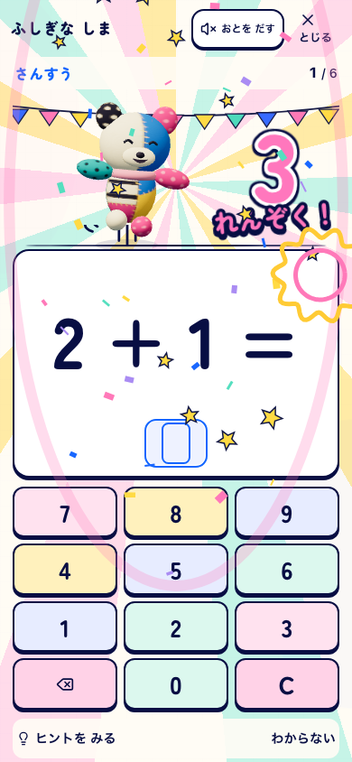
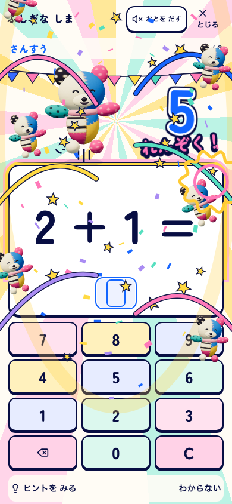
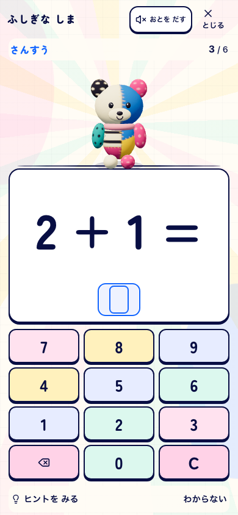
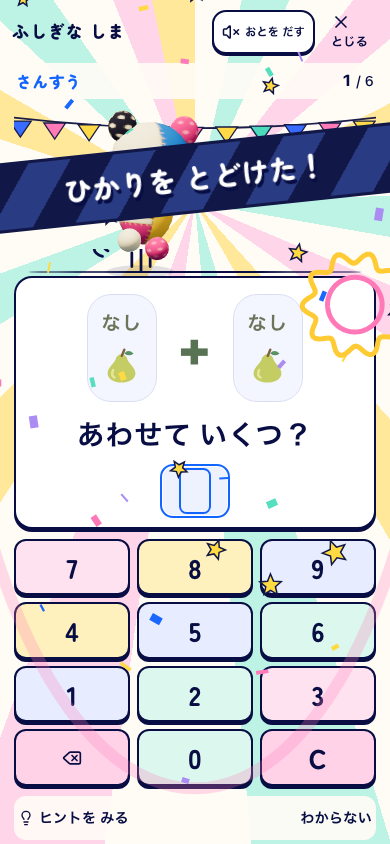
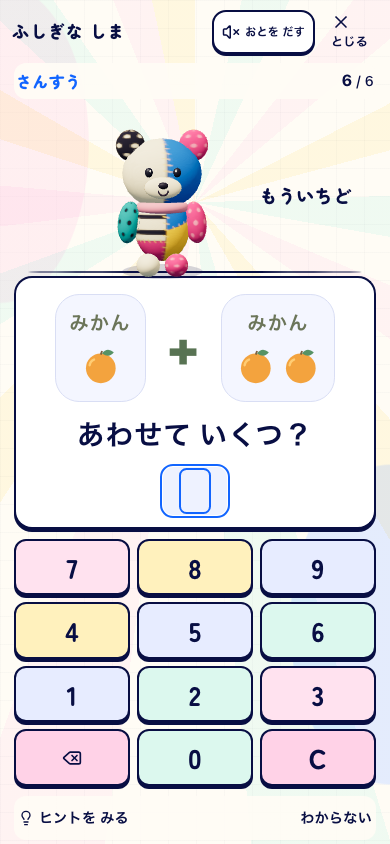
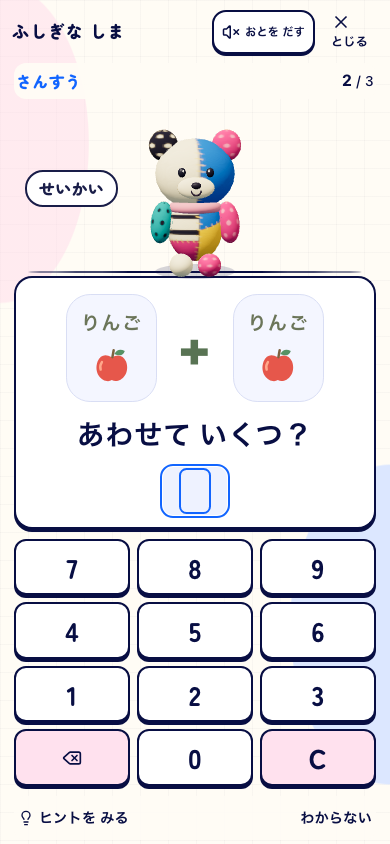
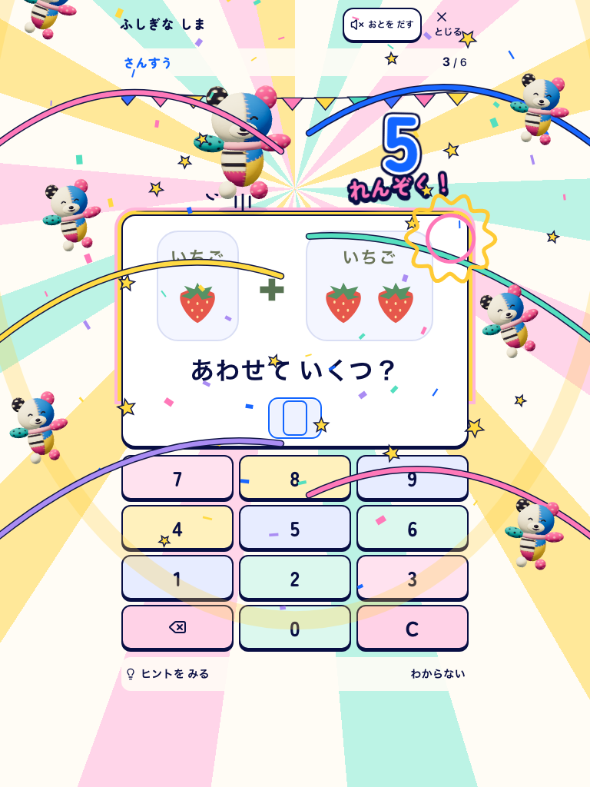
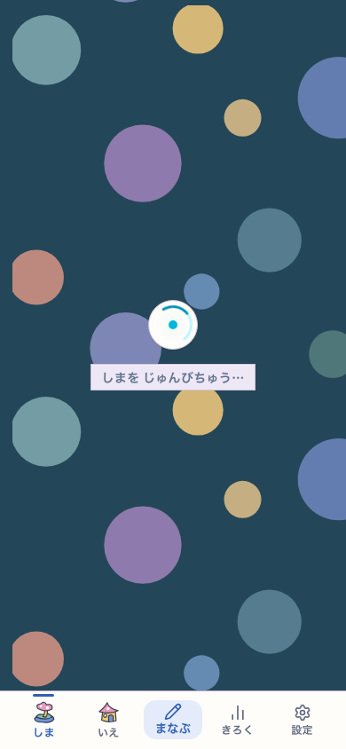
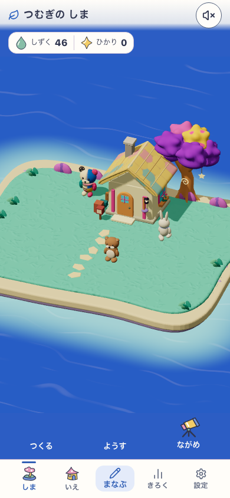

通常は問題とぽこもこ。進むと色と音が育ち、節目にリボンと祝福が画面いっぱいに広がります。
このページは実画面の記録です。画像や下の無音録画から音は鳴りません。操作と音は「実アプリを開く」から確認できます。









使い捨てプロフィールによる実操作の無音録画。実獲得・支援・再開を含みます。固定の27＋35や連続数の注入ではありません。
元のぽこもこ・明るい紙・濃い紺の輪郭・大きな数字を保持し、動きが届く範囲を画面全体へ広げました。